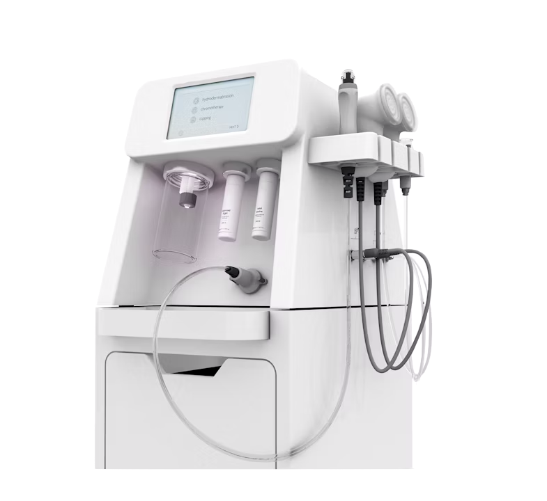

Premium laser- en
huidbehandelingen
in Amsterdam.
Een gericht menu,
klinisch geleverd.
Vijf behandelingen. Elk protocol afgestemd op jouw huid, jouw doelen en jouw agenda — niet meer, niet minder.
Laserontharing
Precisie-laserbehandeling voor blijvend gladde huid, geschikt voor elk huidtype.
→Deep Cleansing Facial
Een verhelderend ritueel dat verstopte, gevoelige of vermoeide huid reset.
→Glacē Glow Facial
Cryo-geïnfuseerde lichtheid met een verfijnde, lit-from-within afwerking.
→Gratis huidscan & consult
Een technologie-gedreven lezing van je huid, van oppervlak tot diepere lagen.
→Op maat — behandelplan
Multidisciplinaire trajecten, afgestemd op jouw huid en agenda.
→Medische kwaliteit,
boutique ervaring.
Geen keten. Geen salon. Precies daartussenin: een privékliniek in Amsterdam voor mensen die resultaat willen zonder het koude, klinische gevoel.
Elke sessie, gekalibreerd.
Geen standaardinstellingen. Elke laserpuls en elke facial wordt afgestemd op jouw huid — op basis van scannerdata en de lezing van de specialist.
Eén specialist, van begin tot eind.
Je wordt niet doorgegeven. De specialist die met je overlegt, is dezelfde die je behandelt — elk bezoek, elk protocol.
Technologie die zich bewijst.
GentleMax Pro Plus, Cryo 7, Glacē, IONTO. We kiezen voor clinical-grade apparatuur omdat het werkt — niet omdat het er goed uitziet.
De instrumenten
achter het resultaat.
We investeren in de apparaten die resultaat leveren — en alleen die apparaten. Een kort, doordacht arsenaal, volledig beheerst door onze specialisten.
GentleMax Pro Plus

Cryo 7

Glacē

IONTO Beauty Tower

Een behandelritme,
geen transactie.
Hoe een typisch SkinTech-traject verloopt, van eerste gesprek tot duurzaam resultaat.
Consult
Een gesprek van 45 minuten en een huidanalyse. Geen druk, geen upsell — gewoon een eerlijke lezing van waar je staat.
Plan
Een geschreven protocol afgestemd op jouw huid, doelen en agenda. Ontvangen vóór je eerste behandeling.
Behandel
Sessies in onze Amsterdamse kliniek. Ongehaast, één specialist, ruimtes gebouwd voor rust — niet voor volume.
Onderhoud
Kwartaalonderhoud, jaarlijkse evaluatie, evoluerend plan. Jouw huid verandert — het protocol ook.
Eerlijke voor,
verdiende na.
Echte resultaten van onze eerste cliënten. Voorbeeldbeelden getoond — cliëntresultaten vervangen deze bij lancering, met volledige toestemming.
Helderheid, eerst.
Een paar vragen die we het vaakst horen. Staat jouw vraag er niet bij? Neem contact op — we beantwoorden ze graag.
Hoeveel laserontharing-sessies heb ik nodig?
De meeste cliënten hebben 6 tot 8 sessies nodig, met een tussenpauze van 4–6 weken voor het gezicht en 6–8 weken voor het lichaam. Haar groeit in cycli en de laser werkt alleen in op haar in de actieve groeifase — geduld is onderdeel van het protocol.
Is de behandeling geschikt voor mijn huidtype?
Ja. De GentleMax Pro Plus is gekalibreerd voor Fitzpatrick-huidtypes I tot en met VI, inclusief donkere en reactieve huid. Elke sessie begint met een huidlezing en een instelling op maat.
Hoe bereid ik me voor op mijn eerste sessie?
Vermijd directe zon en zelfbruiner twee weken van tevoren, en laat de behandelzone vier weken met rust. Scheer de zone 24 uur voor je afspraak. Kom met een schone huid — geen crème of deodorant in de zone.
Hoe ziet de nazorg eruit?
Reken op milde warmte of roodheid gedurende enkele uren. Gebruik de eerste week SPF 50, vermijd sauna, intensief sporten en hete douches de eerste 24 uur, en laat actieve ingrediënten 3 tot 5 dagen achterwege.